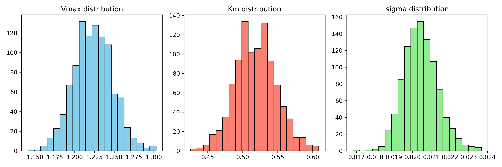

Example code of Michaelis-Menten#
We will use parameter estimation on the Michaelis-Menten formula as an example to illustrate how parameter estimation can be done in our code.
Problem Description#
We consider a parameter estimation problem for a reaction model based on the Michaelis–Menten equation. The goal is to estimate model parameters from time-series data obtained under multiple initial conditions.
Model#
The reaction rate is given by
The time evolution of the substrate concentration is described by
The product concentration is computed as
Parameters#
\(V_{\max}\): maximum reaction rate
\(K_m\): constant controlling how quickly saturation occurs
\(\sigma\) (optional): standard deviation of observation noise
Data Generation#
Simulated data are generated as follows:
Set true parameters \(V_{\max}^{\mathrm{true}}, K_m^{\mathrm{true}}\)
Prepare multiple initial conditions \(S_0^{(i)}\)
Solve the ODE to obtain \(P_{\text{true}}(t)\)
Add Gaussian noise:
Objective#
Estimate parameters that explain all observed time-series data consistently across different initial conditions.
Notes#
This problem is commonly used to evaluate parameter estimation methods such as MCMC and SMC.
Parameter Estimation#
We estimate the parameters \(\theta = \{V_{\max}, K_m, \sigma\}\) from time-series data obtained under multiple initial conditions.
All parameters are shared across different conditions.
Likelihood#
Assuming independent Gaussian noise, the log-likelihood is given by
Implementation#
The likelihood is evaluated by solving the ODE model and comparing the predicted values with the observed data.
For practical use, the main functions that need to be explicitly modified for a new problem are implemented in SMC_example/Micmem_likelihood.py.
These functions define the governing ODE, the simulation procedure on the observation grid, the log-likelihood evaluation, and the particle-wise likelihood calculation used in the SMC routine.
In other words, when adapting this framework to a different application, the core changes are typically concentrated in this part.
In addition, the data required for likelihood evaluation (e.g., observed data, initial conditions) and SMC-related hyperparameters are, in this example, organized in Micmem_settings.py for clarity and modularity.
However, this separation is not mandatory. Users are free to define and manage these quantities in any way that suits their workflow—for instance, by directly specifying them in Micmem_SMC_main.py or integrating them into other scripts.
The framework does not impose a strict structure, and only requires that the likelihood function and the SMC routine receive the necessary inputs in a consistent format.
import ray
# --- ODE and simulation ---
def mm_ode(t, S, Vmax, Km):
return - Vmax * S / (Km + S)
def simulate_mm_on_grid(Vmax, Km, S0, t_array):
"""
Solve the Michaelis–Menten progress curve on the observation time grid t_array.
Returns: P_model(t_array)
"""
t_span = (t_array[0], t_array[-1])
sol = solve_ivp(
fun=lambda t, S: mm_ode(t, S, Vmax, Km),
t_span=t_span,
y0=[S0],
t_eval=t_array,
method="RK45",
)
S_model = sol.y[0]
P_model = S0 - S_model
return P_model
@ray.remote
def log_likelihood_mm_multi(params):
"""
Log-likelihood function using data from multiple initial substrate concentration conditions.
params : [Vmax, Km, sigma]
dataset : list of data loaded by load_all_mm_data()
"""
Vmax, Km, sigma = params
# If sigma is not estimated, it is fixed to sigma_true
if est_sigma:
sigma = params[-1]
else:
sigma = sigma_true
if sigma <= 0:
return -np.inf
logL_total = 0.0
P_model_list = []
for i in range(n_ex):
t = dataset[i]["t"]
P_obs = dataset[i]["P_obs"]
S0 = dataset[i]["S0"]
# Model prediction
P_model = simulate_mm_on_grid(Vmax, Km, S0, t)
# Residual
residual = P_obs - P_model
logL_i = -0.5 * datapoint * np.log(2*np.pi*sigma**2) \
- np.sum(residual**2) / (2*sigma**2)
logL_total += logL_i
P_model_list.append(P_model)
return logL_total, P_model_list
def sim_particle(particle):
print('sim_particle')
# Run the likelihood calculation in parallel
results = [log_likelihood_mm_multi.remote(particle[i, :]) for i in range(n_particle)]
# Retrieve the parallel computation results
llk_Cl = ray.get(results)
# Reshape the returned results
llk, C_l_ = zip(*llk_Cl)
return llk, C_l_
The functions shown above represent the central components that connect the mathematical model to the SMC algorithm.
Therefore, for other ODE-based parameter estimation problems, users mainly need to replace the model equation, the simulation routine, and the likelihood definition in this file while keeping the overall SMC framework unchanged.
Outputs#
The estimation procedure produces several outputs that are useful for both parameter identification and uncertainty quantification.
Estimated values of the parameters \(V_{\max}, K_m, (\sigma)\)
Posterior distributions (or their approximations) of the parameters
Model predictions \(P_{\mathrm{model}}(t)\) corresponding to each particle or sample
These outputs allow us to
compare the estimated parameters with the true values in the case of synthetic data,
evaluate the uncertainty associated with the parameter estimates,
assess the consistency between model predictions and observed data.
In particular, the ability of a single parameter set to consistently explain time-series data obtained under different initial substrate concentration conditions is an important indicator for evaluating the validity of the model.
An example of the posterior distribution output is shown below.
{kind=link}

Fig. 7 Example of posterior distributions obtained from the estimation.#